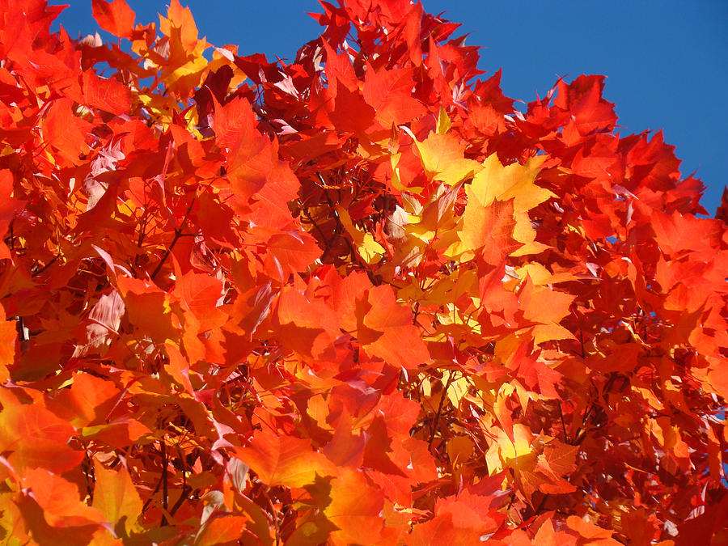

Delicious Pumpkin Loaf
Fall is my absolute favourite time of the year. As the nights get longer and cooler, there is a growing need to pull out those sweaters long packed away in favour of shorts and tanks to combat the summer heat. And while spring and summer have the benefit of the beautiful colours of blossoms in full bloom, I’m partial to the reds, oranges, yellows, and browns characteristic of this season.
And then there are pumpkins!

Now I am not a pumpkin spice fanatic per say, but I will probably try anything labelled “pumpkin spice” at least once ( there are so many things!!! ). My personal preference for pumpkin consumption is in the form of baked goods. Personally, I find most pre-made coffee-based drinks too sugary, the teas smell better than they taste and whoever said “lets put it in alcohol” was very misguided. Also, whoever decided that chocolate and pumpkin go together must be stopped. You can see my favourite pumpkin spice treats here.
All that aside, this is easily my most requested recipe for the holidays. I usually use smaller aluminium foil loaf pans (approximately 7’ x 3’) from the dollar store which yields 2 loaves. I often double or triple the recipe without issue.
Delicious Pumpkin Loaf Recipe
Preparation Time: 15m
Cook Time: 55m
Total Time: 1h10m
Yield: 1 Loaf
Ingredients
For the bread:
- 3 large eggs
- 1½ cups pumpkin puree
- ⅔ cup sunflower oil or any mild-flavored oil
- 1 cup sugar
- ½ cup light brown sugar (packed)
- 2 teaspoons vanilla extract
- 2 teaspoons pumpkin pie spice
- 2 teaspoons cinnamon
- 1 teaspoon baking soda
- ¾ teaspoon baking powder
- ¾ teaspoon salt
- 1½ cups all-purpose flour
For the topping:
- 3 tablespoons pumpkin seeds
- 1 teaspoon honey
- ½ teaspoon sunflower oil or any mild-flavored oil
Directions
For the bread:
- Preheat oven to 350ºF (180ºC).
- Lightly spray a 9x5-inch loaf pan with baking spray. Line with parchment paper. Set aside.
- Crack the eggs in a medium-large bowl and whisk together.
- Add pumpkin puree and whisk until smooth.
- Add the oil, white and brown sugars and the vanilla. Mix until nice and smooth.
- Sprinkle the pumpkin pie spice, cinnamon, baking soda, baking powder and salt over the pumpkin mixture and mix until well combined.
- Add the flour and stir just until the flour has disappeared and no large lumps remain.
For the topping:
- Warm honey in microwave for 10-15 seconds to thin it out and make mixing easier.
- Combine pumpkin seeds, honey and oil and stir to combine. Set mixture aside.
To bake:
- Transfer the batter to the prepared pan.
- Smooth the top and scatter the pumpkin seed mixture over the top.
- Bake for 55-65 minutes.
- Check the bread after 40-45 minutes and if the top seems to be getting brown, loosely cover the pan with tin foil.
- Return to the oven and finish baking until a toothpick inserted into the center of the loaf comes out clean or the internal temperature is 195-205˚F when checked with an instant thermometer.
- Cool for 20 minutes, then slide out of the pan and transfer to a cool rack. Cool completely before slicing.